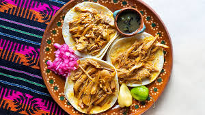
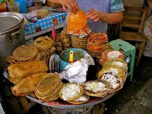
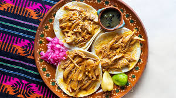
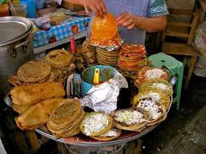
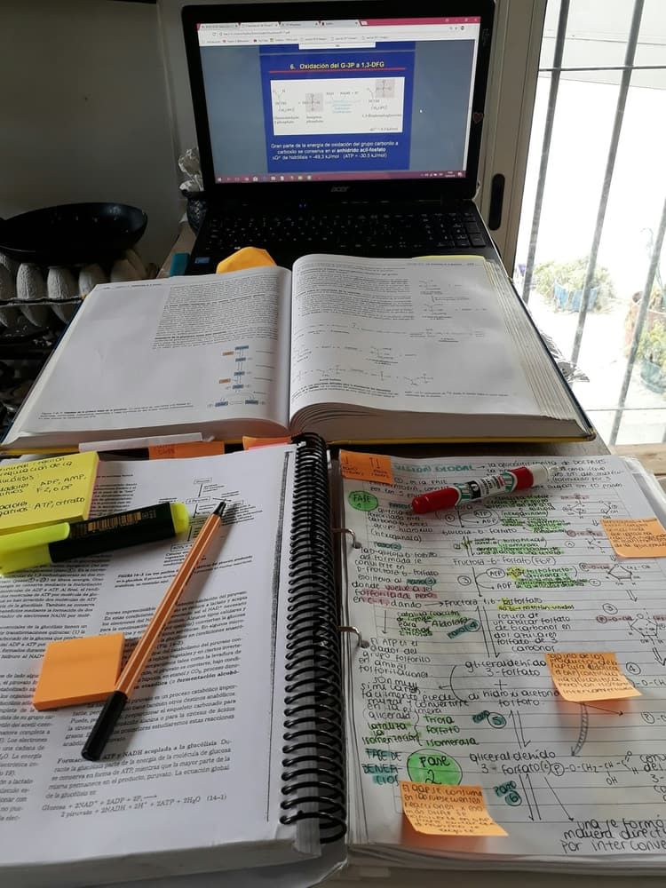

Me encanta el color lila, por que es un color claro, principalmente, pues me gusta la claridad, la luz ya que para mí así son los días y cada nuevo día trae consigo momentos geniales, asi que en especial para mí, los colores claros, son vida y me encantan, en especial el lila por lo lindo y tierno que aparenta ser.

A mí en especial me encantan mucho los platillos típicos de mi país, mi grandioso México, por que si en algo no falla, definitivamente es en la cocina, tenemos demasiada variedad y tooda es sabrosa, sin duda mis favoritos son el pozole y los pambazos.

 

- Futbol Soccer
- Dibujar y diseñar
- Estudiar
Me encanta el futbol soccer por que es un deporte que me desestreza y que siempre me ha traido grandes momentos, ademas de que por herencia sé jugar muy bien, pues toda mi familia desde mi abuelo hasta mi mamá sabían y les gustaba jugar.
Para mí, la construcción, el diseñar, y crear desde mi imaginación nuevos modelos de diferentes objetos, materiales, ropa, productos y hasta hogares me resulta bastante satisfactoria, debido a que precisamente lo que quiero estudiar es la arquitectura, y pues para mí es muy sorprendente saber que tengo grandes ideas que en un futuro puedan ser las mejores obras ya sea nacional o internacionalmente
El recibir la educación que mis padres me han regalado me doy cuenta que realmente es el mejor regalo que yo puedo tener, el ser una persona que estudia, te da mucho conocimiento a lo largo de los diferentes niveles educativos y que cada uno de ellos tiene como fin darte muchas soluciones y conocimientos con las diversas situaciones que en la vida se te presentan.
Sin duda estoy mas que agradecida con quienes mas me apoyan en mis estudios pues ahora comprendo lo mucho que serviran en mi futuro, que hoy es por lo que más me preocupo.
En realidad, para mí la música significa un aspecto muy importante en mi vida, pues la música te da muchas formas de ver la vida, hay música que te ayuda a levantarte cuando estas triste, música que te lleva a recordar muchos momentos que fueron increíbles, música que te alegra, alguna que te hace pensar mucho, unas que cantas con tanto sentimiento y otras que te hacen bailar y en fin para mí, siempre hay música para determinado momento.
Por ello para mí la música me resulta indispensable en la vida de todos, y puedo dar algunos ejemplos de la música que a mi me gusta y en que momentos me gusta escucharla:
- Canción que mas escucho